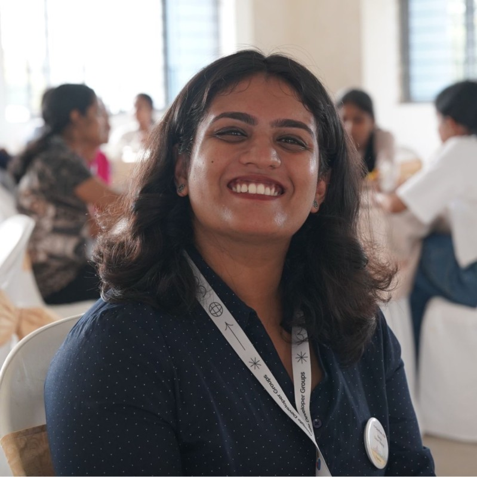

Neha Susan Manoj

About Me
A passionate professional with a strong background in community engagement, program management, and full-stack development. Currently pursuing M.Tech in Product Design and Management at IIIT Hyderabad, building expertise in product strategy and innovation. Previously worked as an Associate at Publicis Sapient, contributing to complex technology projects across diverse domains. Experienced in fostering women’s entrepreneurship and youth empowerment through roles at Kerala Startup Mission and TinkerHub Foundation, with a proven track record of leading impactful initiatives, organizing large-scale community events, and managing stakeholder relationships
Education
- 10th – Good Shepherd Public School Kottayam, 2017
- 12th – Good Shepherd Public School Kottayam, 2019
-
Bachelor of Technology, Computer Science and Engineering
– Government Engineering College Thrissur, 2023
-
Masters of Technology, Product Design and Management
– IIIT-H | International Institute of Information Technology - Hyderabad ,2027
Experience
-
Associate Software Development Engineer -1
– Publicis Sapient, Bengaluru (Feb 2024 – August 2025)
-
Technology Fellow - Women Entrepreneurship Development
– Kerala Startup Mission, Kochi (Sep 2023 – Feb 2024)
-
Community Manager
- TinkerHub Foundation, Kochi June (2021 – April 2023)
Skills
- Program Management ,Communication , Team Management, Community Management , Event Planning and Strategy, People Management , Excel , Powerpoint.
- Project Management Tools (Jira , Confluence ,Notion)
- DevOps (Jenkins , Docker , AWS)
- SpringBoot ,HTML , CSS , JS, React.js ,Java, C , C++ Git , AEM, R
- Database (SQL, Postgres ,MongoDB)
- Testing (Jest , Junit , Selenium) , UI/UX (Figma)